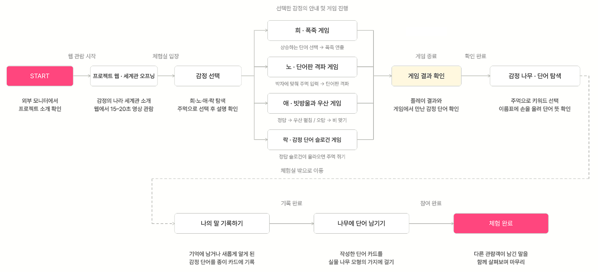

말모이
잊고 있던 감정 단어를 찾는 인터랙티브 체험형 리듬게임
OVERVIEW
"그 많은 말들은 어디로 갔을까?" — 감정의 숲을 지키는 희·노·애·락 네 요정의 초대를 받아, 리듬과 손동작으로 감정 단어를 찾고 그 뜻을 확인한 뒤 기억하고 싶은 말을 실물 나무에 함께 남기는 참여형 전시입니다.
- ROLE
- 프로그래밍 (Unity · 손 인식 · 리듬 판정)
- TEAM
- OCTAVE 8인 (기획 2 · 디자인 2 · 프로그래머 2)
- PERIOD
- 2026.09 ~ 진행 중
- STACK
- Unity · C# · MediaPipe Hands
KNOWLEDGE
이 프로젝트에 쓴 지식
- BUILD
좌표 변환
카메라가 인식한 손 좌표를 스크린 모서리 4점 기준으로 게임 화면 좌표에 맞춰 손 커서로 사용
- BUILD
상태 비교로 입력 판정
지난 프레임과 지금 손 상태를 비교해 "주먹을 쥐는 순간"만 입력으로 받고, 0.5초 간격으로 연속 입력 방지
- BUILD
오디오 시간 기준 리듬 판정
프레임 수가 아니라 음악 시계(
AudioSettings.dspTime)를 기준으로 박자를 판정해, 컴퓨터 성능과 상관없이 같은 타이밍 유지
-
02
PLAN
'말모이'는 말을 모은다는 뜻입니다. 단어를 외우게 하는 대신, 놀이 속에서 낯선 감정 단어를 자연스럽게 만나게 하고 싶었습니다.
리듬으로 시작하는 참여
긴 설명 없이 박자에 반응하며 체험에 들어옵니다.
직접 고르는 단어
손동작으로 고르고, 폭죽·격파·우산 같은 반응으로 바로 확인합니다.
나무에 모이는 말
게임에서 모은 단어를 실물 나무에 남기는 행동으로 이어집니다.
기획 근거 연구 핵심 결과 말모이 적용 게임 속 비의도적 어휘 학습ReCALL 게임 환경에서 흥미와 단어의 두드러짐이 어휘 습득·기억과 관련 암기가 목적이 아닌 게임에서 감정 단어를 눈에 띄게 등장시켜 관심 유도 호기심과 기억Neuron, 2014 호기심이 높은 상태에서 접한 정보가 더 잘 기억됨 게임에서 낯선 단어를 먼저 만나고, 결과 화면에서 뜻을 확인하는 순서 게임화 메타분석Educational Psychology Review 게임화가 학습 동기·행동적 참여·인지적 성과에 긍정적 영향 규칙과 즉각적인 피드백으로 관람객의 능동적 참여 유도 -
03
UI FLOW
요정을 고르고 게임을 하는 체험실 안의 흐름과, 체험실 밖에서 말을 기록해 나무에 남기는 흐름을 하나로 이었습니다.

-
04
GAME DESIGN
희·노·애·락 네 요정의 성격을 먼저 잡고, 처음엔 모두 같은 구조였던 게임을 요정마다 다른 공간과 동작으로 나눴습니다.

희·노·애·락을 시각화한 네 요정과 숲 지킴이 모이 
1차 4레인으로 내려오는 단어를 고르는 공통 방식 
2차 희 폭죽 · 노 송판 격파 · 애 우산 · 락 박수 -
05
DEV
프로그래머로서 MediaPipe 손 인식부터 Unity 게임 흐름, 리듬 판정까지 구현했습니다. 카메라 좌표를 화면 모서리 4점 기준으로 게임 좌표에 맞추고, Unity 손 커서에 반영하는 것부터 시작했습니다.
- 5주차손 커서 입력과 게임 흐름(상황 → 감정 선택 → 리듬게임 → 결과) 뼈대 구현, 스크린 투사 테스트

- 6주차디자인 소스 적용, 주먹 쥐기로 단어 선택. 메뉴(0.8초 머무르기)와 게임(주먹)의 조작을 분리
- 7주차4레인 노트 · 감정별 음악 4곡 · 채보 적용, 나무 결과 화면에서 단어 뜻 확인

- 8주차신호음에 박자로 응답하는 '콜 앤 리스폰스' 방식으로 전환, 요정별 게임 4개 구현, 오디오 시간 기준 판정

- 9주차하트 감소 규칙 정리, 3연속 정답 피버 타임, 감정별 배경·반응 연출

- 5주차손 커서 입력과 게임 흐름(상황 → 감정 선택 → 리듬게임 → 결과) 뼈대 구현, 스크린 투사 테스트
-
06
TEST → FIX
입력 · BEFORE손이 버튼 위에 0.8초 머무르면 자동 선택 → 화면을 살펴보는 손과 고르는 손을 구분할 수 없음
AFTER주먹 쥐기를 선택 동작으로 분리. 손을 폈다가 쥐어야 입력되고, 0.5초 간격으로 연속 입력 방지
KEY CODE FistClick.cs · 주먹 쥐기 입력 [SerializeField] float cooldown = 0.5f; // 두 입력 사이 최소 간격(초) bool wasFist; // 지난 프레임에 주먹이었는지 void Update() { // ... 손 좌표가 버튼 위에 있고 주먹을 쥐었는지 확인 → fistNow // 펴진 손 → 주먹으로 '바뀌는 순간'에만, 0.5초가 지났을 때 클릭 if (fistNow && !wasFist && Time.unscaledTime >= nextClick && button.interactable) { nextClick = Time.unscaledTime + cooldown; button.onClick.Invoke(); } wasFist = fistNow; // 다시 누르려면 손을 한 번 펴야 함 }!wasFist: 주먹을 쥔 채로 있어도 한 번만 입력됩니다. 손을 폈다가 다시 쥐어야 다음 입력이 들어갑니다.nextClick: 손 인식이 흔들려 주먹이 잠깐 풀렸다 잡혀도 0.5초 안에는 다시 눌리지 않습니다.
손 인식 장비는 실제 스크린 앞에서 키넥트와 적외선 웹캠을 비교했습니다.

적외선 웹캠 키넥트보다 안정성이 낮음. 카메라를 바닥 가까이 낮게 둘 때 인식이 나아짐 
키넥트 · 최종 채택 인식이 안정적. 주변 사람까지 인식되는 문제는 다른 관람객이 인식 범위 밖에서 기다리도록 동선을 조정